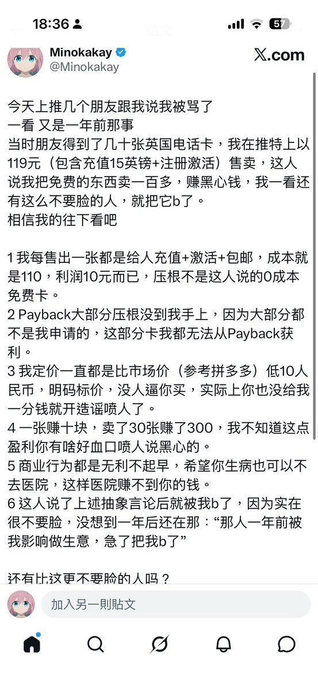
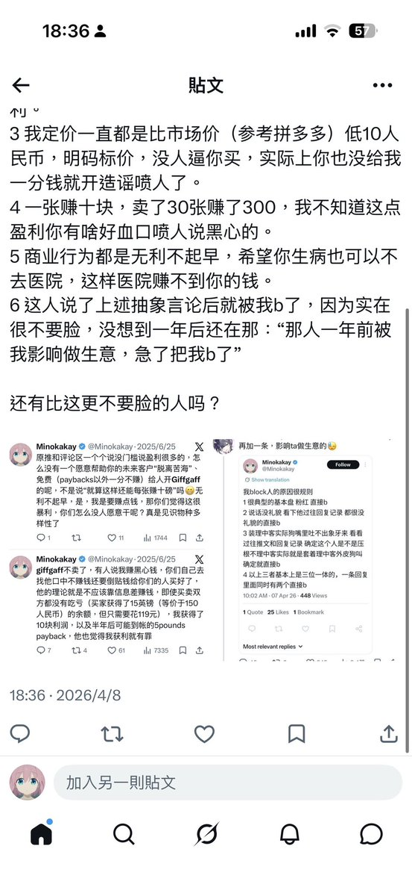
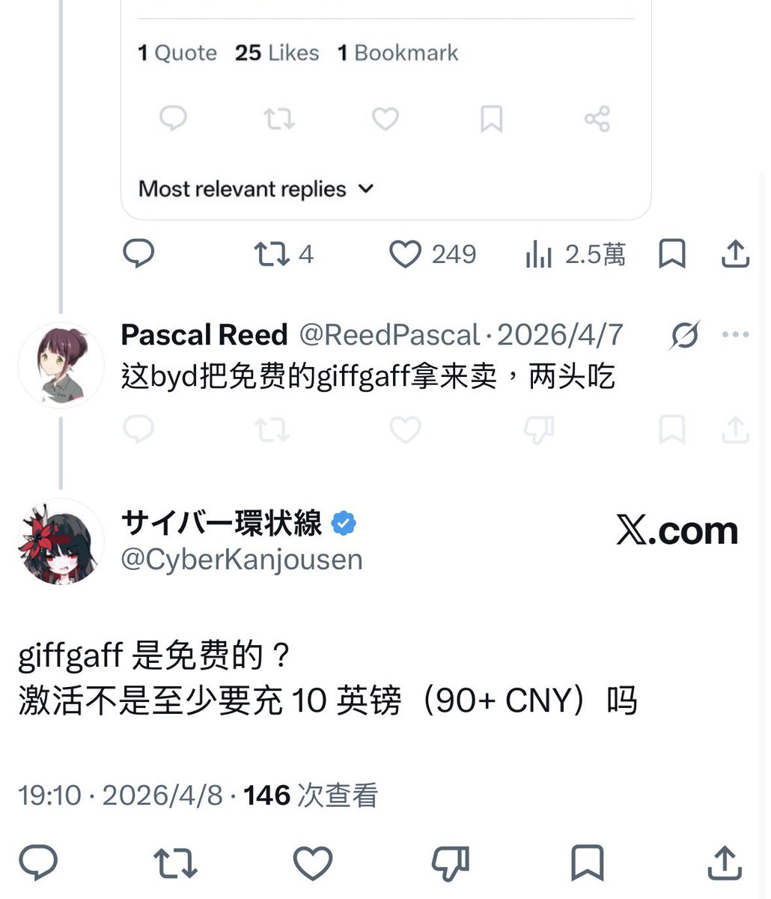

引战的原帖已经删帖了，只留下了三篇继续攻击我的post，我猜删帖的原因也是因为原帖中说的“0成本”“暴利黑心”这类纯造谣的字眼显得太不要脸，会导致自己被了解真相的人骂，而剩下两篇没删今年还来再咬我一篇，想必是因为自己狗咬人被我气到了舍不得松嘴，想继续抹黑我吧。




看到这人被骂了，我又想起来这件事。
大概一年前，我被人造谣攻击说此类利润不到10%的经营是黑心暴利，引来一堆小团体和不明真相的路人围攻我，主要内容就是造谣我119卖免费的东西（实际成本100+）。
在那人帖子下帮腔的，就有这位。 https://t.co/EieOeZBbZs https://t.co/r4ZIv1Lplv
大概一年前，我被人造谣攻击说此类利润不到10%的经营是黑心暴利，引来一堆小团体和不明真相的路人围攻我，主要内容就是造谣我119卖免费的东西（实际成本100+）。
在那人帖子下帮腔的，就有这位。 https://t.co/EieOeZBbZs https://t.co/r4ZIv1Lplv